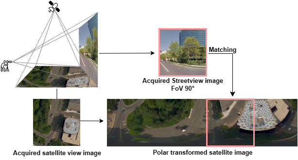

Example of the ground-to-aerial matching problem. The query ground-view image is matched to the polar transformed aerial image

The recent development of generative AI techniques, which has increased the online diffusion of altered images and videos, raises concerns about the credibility of digital media accessible on the Internet and shared by information channels and social networks. Domains that rely on this data, such as journalism, forensic analysis, and earth observation, suffer because of this problem. At this aim, being capable of geolocating a non-geo-tagged ground-view image without external information, like GPS coordinates, is becoming crucial. This study addresses the challenge of linking a ground-view image, on different FoV values, to its corresponding satellite image without relying on GPS data. A novel four-stream Siamese-like architecture, Quadruple Semantic Align Net (SAN-QUAD), was introduced to achieve this. SAN-QUAD expands previous SOTA methods, leveraging semantic segmentation applied to both ground and satellite images. The obtained results on the CVUSA dataset show notable improvements, up to 9.8%, over previous methods when tested across all available fields of view (FoV).
We created a subset of the CVUSA dataset on which we trained and tested SAN-QUAD model.
Emanuele Mule*, Matteo Pannacci*, Ali Ghasemi Goudarzi*, Francesco Pro, Lorenzo Papa, Luca Maiano, and Irene Amerini. Enhancing ground-to-aerial image matching for visual misinformation detection using semantic segmentation. In Proceedings of the Winter Conference on Applications of Computer Vision (WACV) Workshops, pages 795-803, February 2025.
@inproceedings{mule2025enhancing,
title={Enhancing Ground-to-Aerial Image Matching for Visual Misinformation Detection Using Semantic Segmentation},
author={Mule, Emanuele and Pannacci, Matteo and Goudarzi, Ali Ghasemi and Pro, Francesco and Papa, Lorenzo and Maiano, Luca and Amerini, Irene},
booktitle={Proceedings of the Winter Conference on Applications of Computer Vision},
pages={795--803},
year={2025}
}